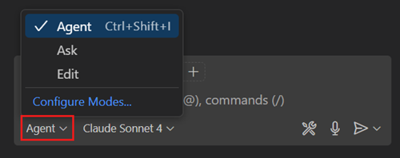
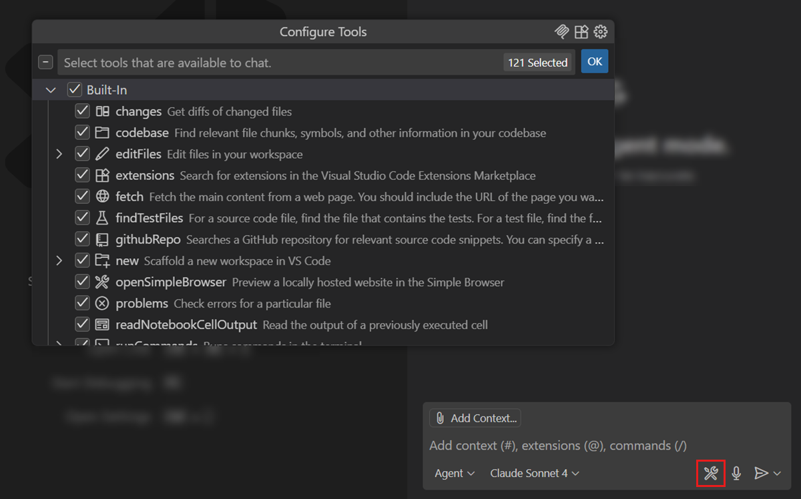
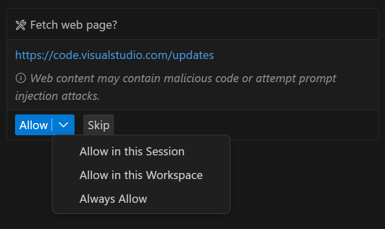
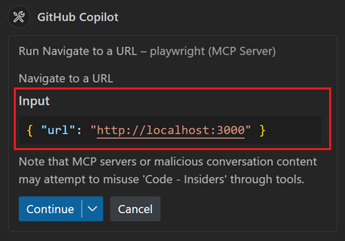
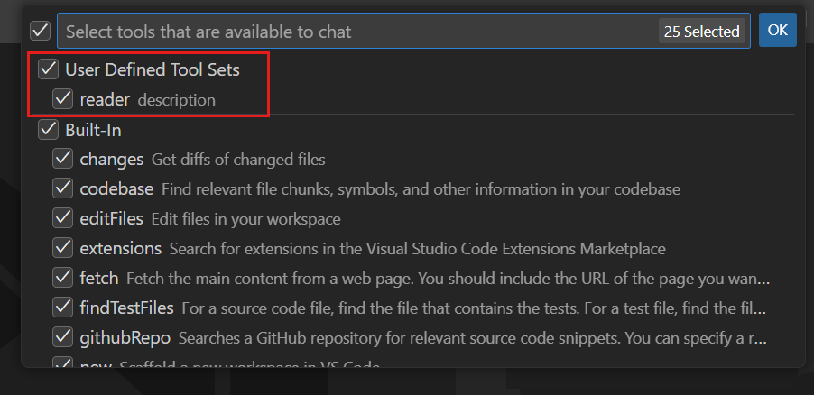
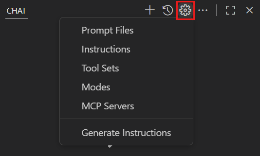
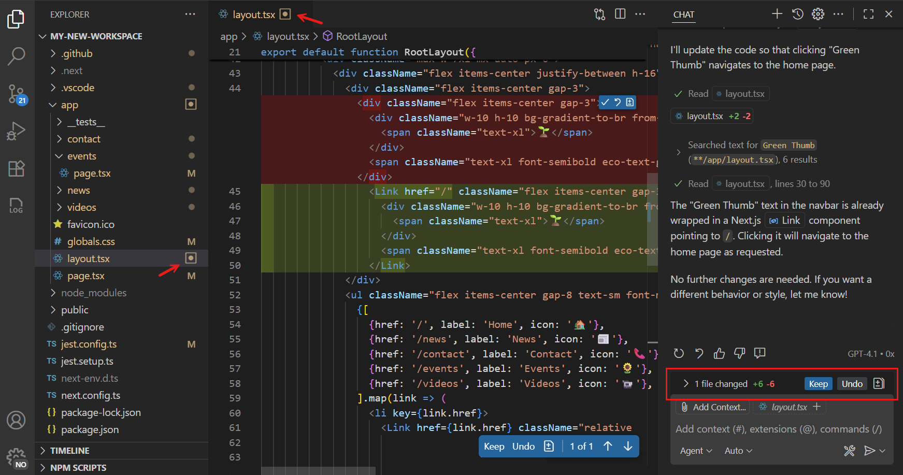
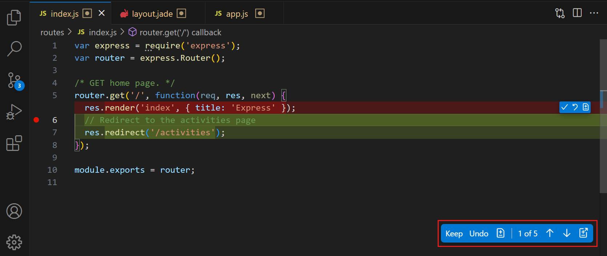
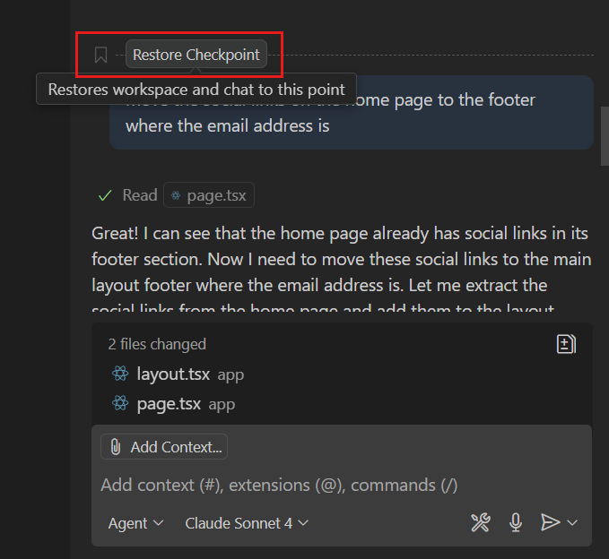

Use agent mode in VS Code
With chat agent mode in LTSerialTool, you can use natural language to specify a high-level task, and let AI autonomously reason about the request, plan the work needed, and apply the changes to your codebase. Agent mode uses a combination of code editing and tool invocation to accomplish the task you specified. As it processes your request, it monitors the outcome of edits and tools, and iterates to resolve any issues that arise.
Prerequisites
- Install the latest version of LTSerialTool
- Access to Copilot. Copilot Free plan and get a monthly limit of completions and chat interactions.
Why use agent mode?
Agent mode is optimized for the following scenarios:
- Coding tasks based on high-level requirements or less well-defined implementation details
- Making autonomous edits across multiple files in your project
- Handling complex tasks that require not only code edits but also the invocation of tools and terminal commands
Agent mode autonomously determines the relevant context and tasks to accomplish a given request. It can also iterate multiple times to resolve intermediate issues, such as syntax errors or test failures.
Some examples of tasks you can use agent mode for:
- Refactor parts of your codebase, such as "refactor the app to use a Redis cache".
- Plan and implement new features, such as "add a login form to the app using OAuth for authentication".
- Migrate your codebase to a new framework, such as "migrate the app from React to Vue.js".
- Generate an implementation plan for a complex task, such as "create a meal-planning web app using a Swift front-end and a Node.js back-end".
- Define a high-level requirement, such as "add social media sharing functionality".
It's important to be aware of the security considerations of using AI-powered development. Review the Security documentation for using AI in VS Code.
Agent mode vs Copilot coding agent
VS Code offers two autonomous coding experiences. While agent mode provides interactive development directly within the editor, the Copilot coding agent works independently on GitHub to implement features in the background.
| Feature | Agent mode | Copilot coding agent |
|---|---|---|
| Where it runs | Your VS Code editor | GitHub cloud |
| Independence | Involves user interaction and iteration | Fully autonomous |
| Output | Edits files directly | Creates pull requests |
| Best for | Interactive development, immediate feedback | Well-defined tasks, background work |
This document describes agent mode. You can learn more about the Copilot coding agent in its documentation.
Enable agent mode in VS Code
Agent mode is available starting from VS Code 1.99.
To enable agent mode in VS Code, enable the chat.agent.enabled setting.
Centrally manage agent mode
To centrally enable or disable agent mode within your organization with device management, check Centrally Manage VS Code Settings in the enterprise documentation.
You can centrally manage the following settings related to agent mode:
-
chat.agent.enabled: enable or disable agent mode
-
chat.extensionTools.enabled: enable or disable using tools contributed by third-party extensions
-
chat.tools.autoApprove: enable or disable auto-approval for agent mode tools
Use agent mode
In agent mode, the AI operates autonomously and determines the relevant context for your prompt.
Follow these steps to get started:
-
Open the Chat view (⌃⌘I (Windows, Linux Ctrl+Alt+I)) and select Agent from the chat mode selector.

-
Enter your prompt for making edits in the chat input field and select Send () to submit it.
You can specify a high-level requirement, and you don't have to specify which files to work on. In agent mode, the AI determines the relevant context and files to edit autonomously.
Experiment with some of these example prompts to get started:
Create a meal-planning web app using React and Node.jsAdd social media sharing functionalityReplace current auth with OAuth
-
Agent mode might invoke multiple tools to accomplish different tasks. Optionally, select the Tools icon to configure which tools can be used for responding to your request.

TipYou can also directly reference a tool in your prompt by typing
#followed by the tool name. You can do this in all chat modes (ask, edit, and agent mode). -
Approve tool invocations and terminal commands.
Before running a terminal command, the
fetchtool, or non-builtin tools, VS Code requests confirmation to continue. This is because tools might run locally on your machine and perform actions that modify files or data.Use the Allow button dropdown options to automatically allow the specific tool for the current session, workspace, or all future invocations. Learn how to manage tool approvals and approve all tool invocations.

If your project has configured tasks in
tasks.json, agent mode tries to run the appropriate tasks. For example, if you've defined a build task, agent mode will run the build task before running the application. Enable or disable running workspace tasks with the github.copilot.chat.agent.runTasks setting. -
Optionally, verify and edit the tool input parameters before running the tool.
Select the chevron next to the tool name to view its details and input parameters. You can edit the input parameters before running the tool.

-
VS Code detects issues and problems in code edits and terminal commands and will iterate to resolve them.
Enable the github.copilot.chat.agent.autoFix setting to automatically diagnose and fix issues in the generated code changes. This setting is enabled by default.
For example, agent mode might run unit tests as a result of a code edit. If the tests fail, it uses the test outcome to resolve the issue.
Agent mode iterates multiple times to resolve issues and problems. The chat.agent.maxRequests setting controls the maximum number of requests that agent mode can make before asking you if it can continue.
-
As your chat request is processed, notice that suggested code edits appear directly in the editor.
You can view the list of changed files in the Chat view. The editor overlay controls enable you to navigate between the suggested edits.
NoteAI-generated code edits are restricted to the files in your current workspace.
-
Review the suggested edits and accept or discard the suggested edits.
-
Continue to iterate on the code changes to refine the edits or implement additional features.
Agent mode tools
Agent mode uses tools to accomplish specialized tasks while processing a user request. Examples of such tasks are listing the files in a directory, editing a file in your workspace, running a terminal command, getting the output from the terminal, and more.
Agent mode can use the following tools:
The built-in tools can only read and edit files in your current workspace.
You can view and manage the tools that can be used for responding to a request. Select the Tools icon in the Chat view to view and select the tools that are available in agent mode.
Based on the outcome of a tool, the agent might invoke other tools to accomplish the overall request. For example, if a code edit results in syntax errors in the file, the agent might explore another approach and suggest different code changes.
A chat request can have a maximum of 128 tools enabled at a time. If you have more than 128 tools selected, reduce the number of tools by deselecting some tools in the tools picker, or ensure that virtual tools are enabled (github.copilot.chat.virtualTools.threshold).
Define tool sets
A tool set is a collection of tools that you can use in chat. You can use tool sets in the same way as you would use individual tools. For example, select a tool set with the tools picker in agent mode or reference the tool set directly in your prompt by typing # followed by the tool set name.

Tool sets enable you to group related tools together, making it easier to use them in your chat prompts, prompt files, or custom chat modes. This can be particularly useful when you have many installed tools from MCP servers or extensions.
To create a tool set, select the Configure Chat button in the Chat view, select Tool Sets, and then select New tool sets file. Alternatively, you can use the Chat: Configure Tool Sets command from the Command Palette (⇧⌘P (Windows, Linux Ctrl+Shift+P)).

A tool sets file is a .jsonc file that is stored in your user profile and that contains a list of agent mode tools. A tool set has the following structure:
<tool set name>: name of the tool set, which is displayed in the tools picker and when referencing the tool set in your prompt.tools: list of tool names that are included in the tool set. The tools can be built-in tools, MCP tools, or tools contributed by extensions.description: brief description of the tool set. This description is displayed alongside the tool set name in the tools picker.icon: icon for the tool set, values can be found in the Product Icon Reference.
The following code snippet shows an example of a tool sets file that defines a tool set named reader:
{
"reader": {
"tools": [
"changes",
"codebase",
"fetch",
"findTestFiles",
"githubRepo",
"problems",
"usages"
],
"description": "description",
"icon": "tag"
}
}
Manage tool approvals
Before agent mode runs a tool or terminal command, it requests confirmation to run it. This is because they might perform actions that modify files or data or perform destructive actions.
In the Chat view, when a tool or terminal command invocation occurs, use the Allow button dropdown options to automatically confirm the specific tool for the current session, workspace, or all future invocations.
You can reset the tool confirmations by using the Chat: Reset Tool Confirmations command in the Command Palette.
It's important to be aware of the security considerations of using AI-powered development. Review the Security documentation for using AI in VS Code.
Auto-approve all tools and commands
When you enable the chat.tools.global.autoApprove setting, you can disable all manual approvals for tools and terminal commands in all workspaces.
As an enhanced boundary, you might choose to set chat.tools.global.autoApprove only when connected to a remote environment. You'll want to set this as a remote, rather than user-level, setting. Note that remote environments that are part of your local machine (like dev containers) or that have access to your credentials will still pose different levels of risk.
This setting disables critical security protections and makes it much easier for an attacker to compromise the machine. Read the Security documentation for using AI in VS Code to understand the implications of this setting.
Auto-approve terminal commands
Before agent mode runs a terminal command, it requests confirmation to run it. If you want more fine-grained control over which terminal commands are auto-approved, use the chat.tools.terminal.autoApprove setting.
This setting lets you specify both allowed and denied commands in a single configuration:
- Set commands to
trueto automatically approve them without confirmation - Set commands to
falseto always require explicit approval - Set commands to
nullto unset the default behavior for that command - Use regular expressions by wrapping patterns in
/characters
For example:
{
// Allow the `mkdir` command, regardless of arguments
"mkdir": true,
// Allow `test/scripts.sh`, since this contains a `/` it will also allow `\`
// and an optional `./` or `.\` prefix
"test/scripts.sh": true,
// Allow `git status` and all commands starting with `git show`
"/^git (status|show\\b.*)$/": true,
// Block the `del` command, regardless of arguments
"del": false,
// Block any command containing the text "dangerous"
"/dangerous/": false,
// Unset the default `rm` rule to allow other rules to auto approve `rm`
// commands
"rm": null,
}
By default, commands and regular expressions are evaluated for every subcommand within the full command line, so foo && bar needs both foo and bar to match a true entry and must not match a false entry in order to auto-approve.
For advanced scenarios, you can use object syntax to control whether patterns match against individual subcommands or the full command line:
{
// Broad rule to block any _command line_ that contains the text ".ps1"
"/\\.ps1\\b/i": { "approve": false, "matchCommandLine": true }
}
The matchCommandLine property determines the matching behavior:
false(default): Matches against subcommands and inline commands. For example, forfoo && bar, bothfooandbarmust match.true: Matches against the full command line. For example,foo && baris treated as a single string.
For a terminal command to be auto approved, both the subcommand and command line must not be explicitly denied, and either all subcommands or the full command line needs to be approved.
Accept or discard edits
VS Code lists the files that were edited in the list of the changed files in the Chat view. Files with pending edits also have a visual indicator (dot within a square) in the Explorer view and editor tabs.

With the editor overlay controls, you can navigate between the suggested edits by using the Up and Down controls. Use the Keep or Undo button to accept or reject the edits for a given file.

If you stage your changes in the Source Control view, any pending edits are automatically accepted. On the other hand, if you discard your changes, any pending edits are also discarded.
When you close VS Code, the status of the pending edits is remembered and restored when you reopen VS Code.
To automatically accept all the suggested edits after a specific delay, configure the chat.editing.autoAccept setting. By hovering over the editor overlay controls, you can cancel the auto-accept countdown. If you automatically accept all edits, it's recommended to still review the changes before committing them in source control.
Manage file edit approvals
You can manage which files the AI is allowed to edit without asking for explicit user approval with the chat.tools.edits.autoApprove setting. This setting can help inadvertent edits to files that contain sensitive information like workspace configuration settings or environment settings.
The chat.tools.edits.autoApprove setting accepts glob pattern-boolean pairs that indicate which files are automatically approved for edits. For example:
"chat.tools.edits.autoApprove": {
"**/*": true,
"**/.vscode/*.json": false,
"**/.env": false
}
Edit a previous chat request
You can edit a previous chat request in the active chat session. This is useful if you want to refine your prompt or correct a mistake. Editing a chat request is equivalent to reverting the request and then submitting a new request with the edited prompt. Learn more about editing a previous chat request.
Revert edits with checkpoints
Chat checkpoints provide a way to restore the state of your workspace to a previous point in time, and are particularly useful when chat interactions resulted in changes across multiple files.
When checkpoints are enabled, VS Code automatically creates snapshots of your files at key points during chat interactions, allowing you to return to a known good state if the changes made by chat requests are not what you expected or if you want to try a different approach.
To enable checkpoints, configure the chat.checkpoints.enabled setting.

Learn more about working with checkpoints in chat.
Track progress with todo lists (Experimental)
To have a better overview of the individual tasks that the agent is working on, you can enable the experimental todo list feature in agent mode. This feature helps you track the progress of the tasks being completed by the agent. This also help the agent to stay focused on the overall goal. As the agent completes tasks, it updates the todo list to reflect the current state of the work.
Enable the todo list functionality with the chat.todoListTool.enabled setting.
Use instructions to get AI edits that follow your coding style
To get AI-generated code edits that follow your coding style, preferred frameworks, and other preferences, you can use instruction files. Instruction files enable you to describe your coding style and preferences in Markdown files, which the AI uses to generate code edits that match your requirements.
You can manually attach instruction files as context to your chat prompt, or you can configure the instruction files to be automatically applied.
The following code snippet shows an example of an instruction file that describes your coding style and preferences:
---
applyTo: "**"
---
# Project general coding standards
## Naming Conventions
- Use PascalCase for component names, interfaces, and type aliases
- Use camelCase for variables, functions, and methods
- Prefix private class members with underscore (_)
- Use ALL_CAPS for constants
## Error Handling
- Use try/catch blocks for async operations
- Implement proper error boundaries in React components
- Always log errors with contextual information
Learn more about using instruction files.
Settings
The following list contains the settings related to agent mode. You can configure settings through the Settings editor (⌘, (Windows, Linux Ctrl+,)).
- chat.agent.enabled: enable or disable agent mode (default:
false, requires VS Code 1.99 or later) - chat.agent.maxRequests: maximum number of requests that chat can make in agent mode (default: 5 for Copilot Free users, 15 for other users)
- github.copilot.chat.agent.runTasks: run workspace tasks when using agent mode (default:
true) - chat.mcp.discovery.enabled: enable or disable discovery of MCP servers configured in other tools (default:
true) - github.copilot.chat.agent.autoFix: automatically diagnose and fix issues in the generated code changes (default:
true) - chat.tools.autoApprove (Experimental): automatically approve all tools (default:
false)
Frequently asked questions
Why would I use agent mode instead of edit mode?
Consider the following criteria to choose between edit mode and agent mode:
- Edit scope: agent mode autonomously determines the relevant context and files to edit. In edit mode, you need to specify the context yourself.
- Task complexity: agent mode is better suited for complex tasks that require not only code edits but also the invocation of tools and terminal commands.
- Duration: agent mode involves multiple steps to process a request, so it might take longer to get a response. For example, to determine the relevant context and files to edit, determine the plan of action, and more.
- Self-healing: agent mode evaluates the outcome of the generated edits and might iterate multiple times to resolve intermediate issues.
- Request quota: in agent mode, depending on the complexity of the task, one prompt might result in many requests to the backend.
When should I use Copilot coding agent instead of agent mode?
Use Copilot coding agent for well-defined tasks that can be handled independently in the background without immediate user interaction. Use agent mode when you want to stay involved in the development process and iterate quickly on changes.
Use both experiences together by starting with agent mode to analyze the feature and determine the implementation approach, and then hand off the well-defined task to the Copilot coding agent to work on it in the background.
I'm getting an error that says "Cannot have more than 128 tools per request."
A chat request can have a maximum of 128 tools enabled at a time. If you have more than 128 tools selected, reduce the number of tools by deselecting some tools in the tools picker in the Chat view, or ensure that virtual tools are enabled (github.copilot.chat.virtualTools.threshold).